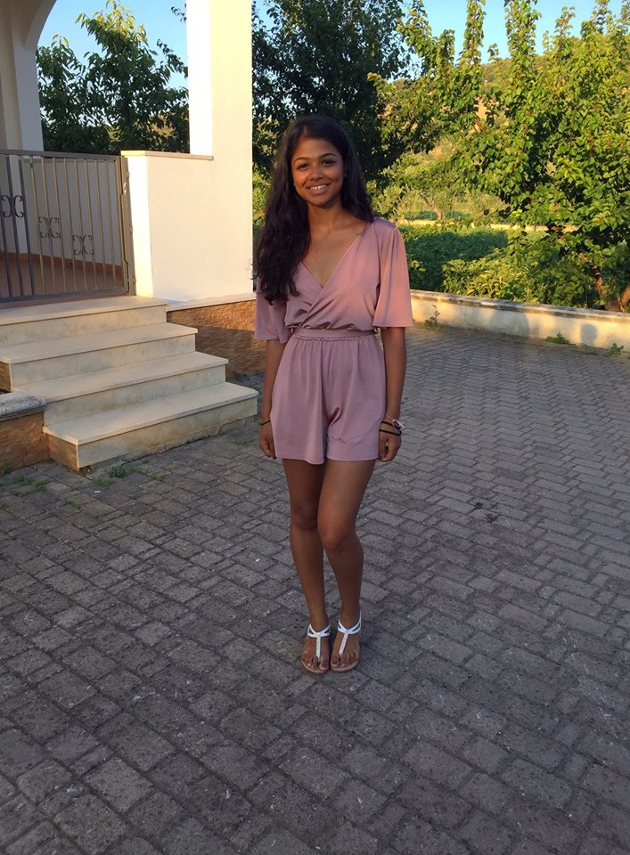

I looked in Prospectus’ after obtaining my year 12 grades and went for pharmacy. I always wanted to do something in healthcare as I did well in my science subjects. I didn’t necessarily want to do a pure science subject and I didn’t want to apply for medicine, so I thought Pharmacy was a good subject in the middle, combining the healthcare and science aspects. We are nurtured very well and each year is different in terms of how we are assessed so it allows those who are good at exams to excel as well as those who are good at coursework. I have learnt that university is expensive and learning how to budget is key. I didn’t previously realise this as I relied on my parents, so now I have become more conscience with money. The ratio of men and women on my course is equal, Pharmacy is quite a neutral degree. The support system is secure, we have the careers service or university counselling - the support from my academic advisor is also very helpful. The department of Pharmacy are constantly sending emails for opportunities present for us STEM students, which is how I have become interested in Law. I’ve recognised how much I can do with my degree with the help of University. My fellow friends studying STEM subjects helps me to discipline myself as we have all got into a routine of working. The happiest period in my life was when I was living at home, during secondary school. I had a quiet and relaxed routine which included my family. I always look back fondly on this period. My inspirations are my mum, dad and sister. My mum and sister are very strong and empowered. They give me the strength and give me confidence as a person. They are truly high powered, independent women. My dad inspires me because he can view situations in a different perspective and help me make a balanced decision in my life. I appreciate all three of them as they are calm and collected people. I’m most looking to graduating, driving and moving back to London. I feel like I am ready to move onto the next stage in my life. I want to become physically fit and train and eat well. I also want to become stronger, more confident. I personally would like to also travel abroad myself and tour countries all over the world. I personal achievement of mine would be to work in an orphanage.